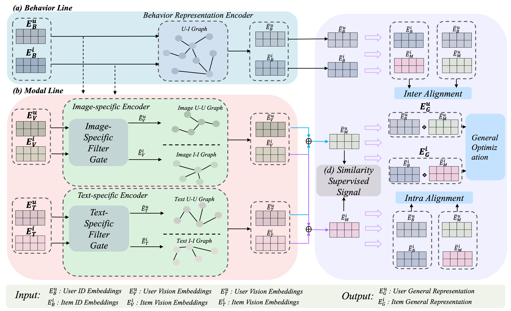
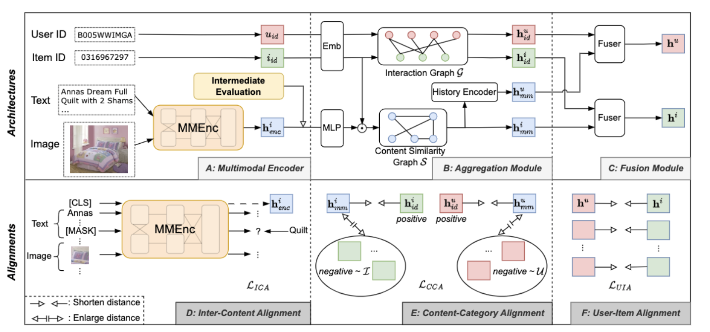

I'm an incoming Ph.D. student at the APEX Lab, Shanghai Jiaotong University, advised by Prof. YongYu and Prof. Weinan Zhang .
Currently, I am an undergraduate student at Shanghai Jiao Tong University, majoring in Computer Science and Technology. My Research interest mainly lie in Data Mining, Recommendation System and Robotics Learning.
Xiao Hong Shu
Duration: May 2023 - Present
Description: During the internship, I mainly focus on Multimodal Recommendation System, collaborating with Application Model Group of AI Technology Department of Xiaohongshu.
Shanghai Qi Zhi Institute
Duration: October 2023 - Present
Description: During the internship, I am delighted to cooperate with Gu Zhang and Yanjie Ze, advised by Prof. Huazhe Xu, focusing in Robotics Learning .
Publication
I'm interested in Data Mining, Recommendation and Robotics.

DRepMRec: A Dual Representation Learning Framework for Multimodal Recommendation Kangning Zhang,
Yingjie Qin,
Ruilong Su,
Yifan LiuJiarui Jin,
Weinan ZhangYong Yu arxiv
To address coupling and misalignment problem in Multimodal recommendation System, in this paper, we propose a novel Dual Representation learning framework called DRepMRec, which introduce separate dual lines for coupling problem and Behavior-Modal Alignment (BMA) for misalignment problem.
Furthermore, we integrate the BMA into other recommendation models, resulting in consistent performance improvements. To ensure dual representations maintain their semantic independence during alignment, we introduce Similarity-Supervised Signal (SSS) for representation learning.
We present 3D Diffusion Policy (DP3), a novel visual imitation learning approach that incorporates the power of 3D visual representations into diffusion policies.

An Aligning and Training Framework for Multimodal Recommendations Yifan Liu*,
Kangning Zhang*,
Xiangyuan Ren,
Yanhua Huang,
Jiarui JinYinjie Qin,
Ruilong Su,
Ruiwen Xu,
Weinan Zhang arxiv
In this paper, we first systematically investigate the misalignment issue in multimodal recommendations, and propose a solution named AlignRec.
We also find that the multimodal features generated by AlignRec are better than currently used ones, which are to be open-sourced.
In this paper, we introduce ClickPrompt, aiming to model both the semantic knowledge and collaborative knowledge for accurate CTR estimation, and meanwhile address the inference inefficiency issue.
{kind=link}